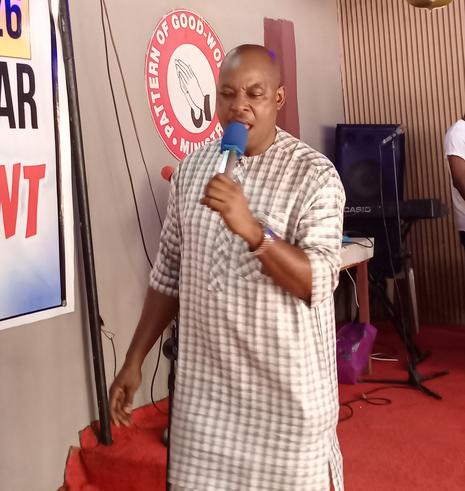

Ministers & Special Guests
God has consistently sent remarkable men and women of God to minister at Bless My Day. Here are some of the special guests who have graced our monthly gathering.

Prophet Jesuloba
A powerful minister of God whose message on faith and breakthrough set the entire congregation ablaze during one of our most memorable Bless My Day editions.
Prophet Ayeni
Known for deep intercession and prophetic ministry, this servant of God brought a fresh move of the Holy Spirit that left no one the same after the service.

Pastor Olanrewaju
A worship leader and evangelist whose ministration during Bless My Day drew powerful encounters with the presence of God.
Pastor Festus
This vessel of God brought restoration during a special edition of Bless My Day, and several testimonies followed immediately after.